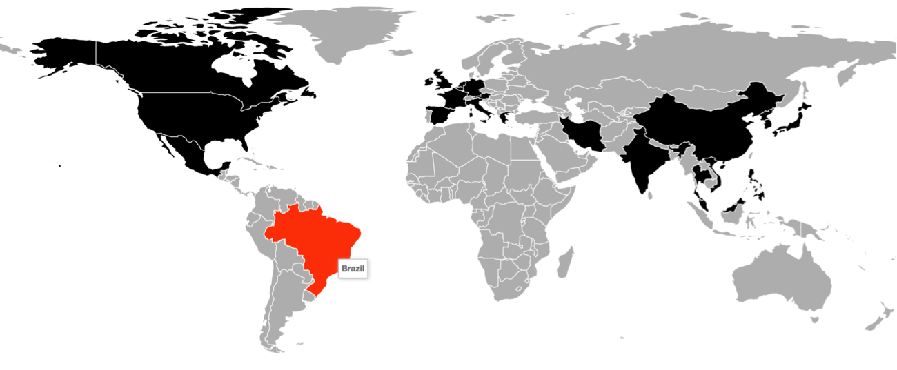
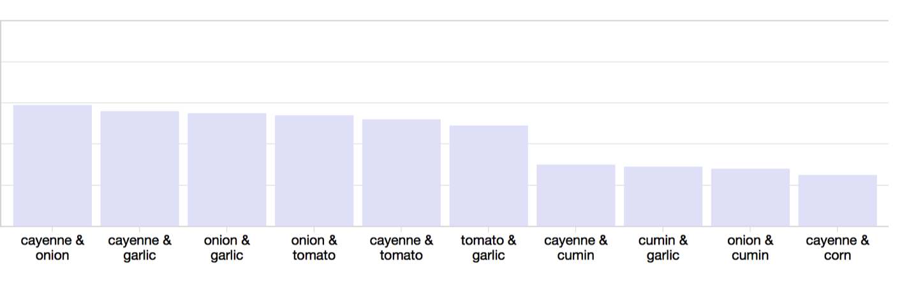
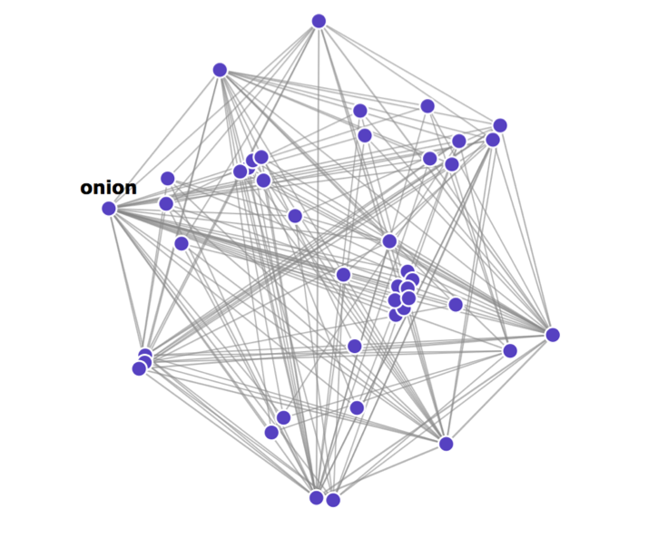

Toggle Navigation
MSAN 622
Contact
Decomposing Traditional Country Cuisines
An in-depth discussion of techniques and implementation for my D3 visualization.
Visualization
Discussion
Interactive Map
Description here.

Ingredient Pairings Barchart
Description here.

Recipe Ingredient Network
Description here.
